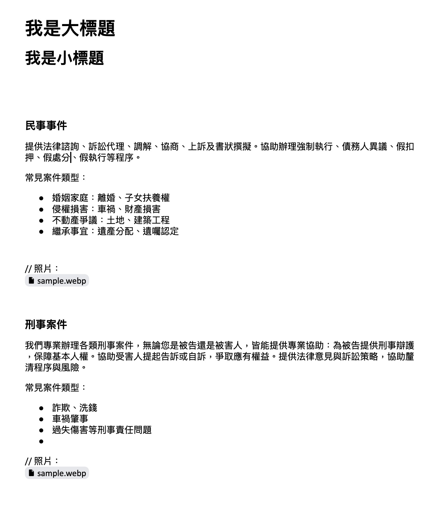

📄 原始文件格式範本
在準備文案（例如在 Word 或筆記本撰寫）時，請依照下列邏輯設定格式，系統將能最精確地辨識內容：
範例：

📝 Markdown 語法對照表
這款工具支援特定的 Markdown 語法來對應到不同的欄位。詳細對照如下：
| 格式設定 | Markdown 寫法 | 對應功能說明 |
|---|---|---|
| 標題 1 | # 內容... |
H1 (大標)：通常作為文章主標題。 |
| 標題 2 | ## 內容... |
H2 (副標)：通常作為文章副標或區塊標題。 |
| 標題 3 | ### 內容... |
H3 (小標)：常作為卡片、QA 題目或項目的標題。 |
| 一般文字 | 純文字 | P (敘述)：段落內容。 |
| 列表 | * 項目一 或 - 項目一 |
UL (列表)：會轉換為點列式清單。 |
| 圖片 |  |
Image：自動填入圖片 URL 與 Alt 描述。 |
| 忽略備註 | // 備註內容 |
Ignore：此行不會被輸出。 |
💡 進階技巧：特殊版型語法
某些版型（如 電子表單B-公司資訊）有特殊的解析規則，請參考下方寫法：
### **公司名稱**
#### **電話**
04-12345678, tel:04-12345678
#### **地址**
403臺中市西區大隆路20號
// 這裡是備註，確認後再刪除
📝 關於備註：
如果是給設計師的備註請在該行最前面加上
範例：
如果是給設計師的備註請在該行最前面加上
//範例：
// 這段文字系統會自動忽略它，不會轉譯他
⚡ 快速入門 (三步驟)
步驟一：選擇排版樣式
在左上角的選單中，選擇你想使用的版型（例如：「上文下圖」或「QA列表」）。這會決定內容的呈現方式。
步驟二：貼上文案
將依照上述「格式範本」準備好的內容，貼入左側的「Markdown 貼貼」區塊，並按下「交給你了」按鈕。
步驟三：預覽與輸出
右側會即時顯示預覽畫面。確認無誤後，點擊左下角的「👌🏻 給我html」，然後複製產生的程式碼即可。
🎨 版型樣式總覽
工具目前提供兩大類型的樣式：
1. 資料上傳類 基礎
- article-01/02/03 (圖文配置)：最標準的部落格文章格式，包含大標、副標、圖片與內文。
- article-04 (兩欄純文字)：適合展示特點介紹，無圖片。
- article-05/12 (多欄圖文卡片)：適合產品展示、服務項目介紹。
- article-15 (公司資訊)：專用於頁尾或聯絡頁面的公司資料列表。
2. 內頁美編類 進階
- article-06 (QA列表)：自動生成問與答的摺疊或條列樣式。
- article-08 (Sticky 文字列)：左側有序號，適合步驟教學。
- article-10/11 (Icon 排版)：帶有小圖示(Icon)的排版，適合強調功能特色。
- article-13/14 (三欄排版)：豐富的 Icon 與數字卡片設計。
❓ 常見問題 (FAQ)
Q: 為什麼我的圖片沒顯示？
A: 請確認你的圖片格式。工具目前支援 .jpg, .png, .webp, .jpeg
結尾的網址。如果網址沒有副檔名，可能會被視為普通連結。
Q: 如何調整區塊順序？
A: 在生成 HTML 之前，你可以在中間的「內容排序與編輯」區塊，按住區塊左上角的 拖曳圖示 (六個點) 上下移動即可。
Q: 我可以刪除某個不需要的欄位嗎？
A: 可以！每個輸入欄位右上角都有一個 垃圾桶圖示 或 X 按鈕，點擊後該欄位就不會被輸出到 HTML 中。